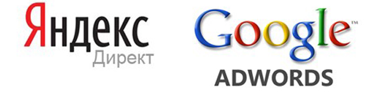
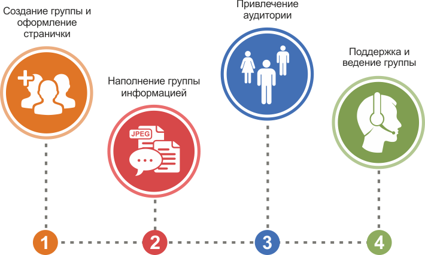
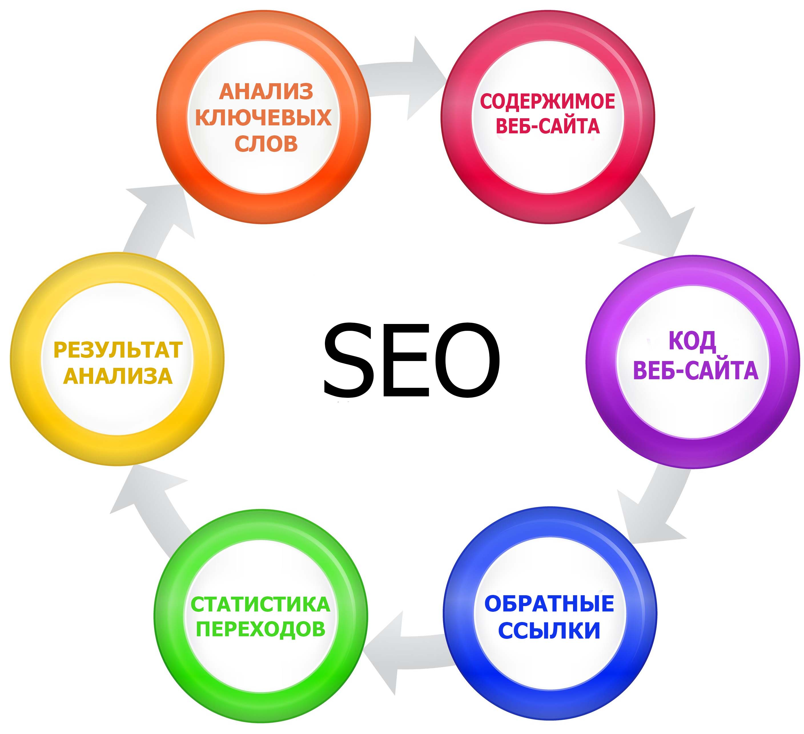

У вас уже есть свой сайт и вы хотите вывести его на первые позиции в поисковых системах Google и Яндекс? Мы можем предложить ряд технологий (SEO, контекстная и баннерная реклама, ретаргетинг), которые быстро выделят вас в результатах поисковой выдачи именно в вашей области. Станьте лидером вместе с LimeMedia!
Контекстная реклама – один из наиболее быстрых и надежных способов вывести свой сайт на первые позиции выдачи в поисковых системах Яндекс и Google. При помощи нехитрых технологий можно легко привести на свой ресурс аудиторию, интересующуюся определенной тематикой. Специалисты компании LimeMedia в совершенстве владеют всеми премудростями контекстной рекламы и готовы предоставить свои бесценные навыки и опыт к вашим услугам.
Контекстную рекламу размещают на страницах выдачи результатов поисковика и тематических сайтах-партнерах Яндекса. Также в качестве площадок для расположения объявлений используются проверенные интернет-сайты с высокой посещаемостью. Если посмотреть на страницу выдачи результатов поиска в Яндексе, можно увидеть, что контекстная реклама располагается сверху и справа от основных результатов поиска:
Одной из популярнейших систем контекстной рекламы является Яндекс. Директ. Система отвечает за расположение объявлений на:
Крайне важным достоинством контекстной рекламы по праву считается таргетинг (от англ. «target» – цель) – механизм адресного «нацеливания» объявлений на конкретного потребителя с заданными свойствами. В Яндекс.Директ имеется возможность выбора аудитории по временному, географическому и поведенческому признакам. Таргетинг выделяет пользователей, которым необходимо показывать рекламные объявления, то есть за клики которых нужно платить. Яндекс.Директ пользуется ручной модерацией – проверкой рекламных объявлений человеком, что вполне может ограничить рекламодателя в подаваемой информации.
Но так ли все просто и идеально? Насколько часто люди заостряют внимание на подобных объявлениях? Одним из наиболее явных недостатков контекстной рекламы считается баннерная слепота – эффект невосприимчивости данного типа рекламы. Очень часто посетитель попросту не видит объявлений, и они вызывают у него недоверие автоматически. К тому же контекстная реклама, к сожалению, не дает 100%-ных гарантий того, что после перехода по объявлению пользователь сайта непременно превратится в покупателя ваших товаров и услуг.
Каждый, кто имеет хотя бы малейшие представления о контекстной рекламе, периодически задумывается о том, что он сможет прорекламировать свои товары самостоятельно, не прибегая к услугам агентств, предлагающих услуги по настройке и поддержке рекламной кампании в Глобальной сети. Так ли это на самом деле?
Следует учитывать тот факт, что непродуманная либо не правильно созданная рекламная кампания может обойтись вам гораздо дороже, нежели та, которая разработана профессионалом. Ставя перед собой цель максимизации прибыли, многие системы контекстной рекламы предпочитают выбирать эффективные и грамотно составленные объявления. Крайне важно осуществить правильный подбор ключевых слов для такого объявления, поскольку именно они в дальнейшем привлекут на веб-сайт основную массу посетителей.
Расценки в системе контекстной рекламы подвергаются изменениям по нескольку раз в день, в связи с чем требуется ежедневный контроль и коррекция рекламной кампании. Если не следить регулярно за ставками, ваши объявления быстро вытеснят конкуренты либо увеличатся переплаты за рекламу, что непременно скажется на расходе бюджета не лучшим образом, и кампания в итоге окажется неэффективной.
Продвижение в социальных сетях (Social Media Marketing, SMM) – стремительно набирающая обороты сфера рекламной деятельности. Если вы хотите, чтоб вас знали, о вас говорили, про вас помнили – это идеальный вариант раскрутки. На сегодняшний день совсем немного агентств занимается этим сложным, но поистине эффективным типом раскрутки. И LimeMedia – как раз одно из таких агентств. Мы имеем немалый опыт в этой сфере, и можем легко заставить широкую публику говорить о ваших успехах.
Поисковая оптимизация (Search Engine Optimisation, SEO) включает в себя целый комплекс услуг, направленных на улучшение позиции сайта в рейтингах поисковых машин Яндекс и Google. Сюда входит аудит сайта, его внутренняя оптимизация, а также целенаправленное активное продвижение по определенным тематическим словами и словосочетаниям. Все это вы можете заказать в компании LimeMedia, мы с радостью проведем для вас предварительный анализ сайта и совершенно бесплатно предоставим прогнозы по поисковой оптимизации и дальнейшему продвижению.
Поисковое продвижение сайтов и seo оптимизация — дает эффект точного попадания конкретной информации в ту категорию целевых посетителей, для которых продукт или услуги, предлагаемые во время seo-продвижения сайта будут наиболее интересны.
Да и затратная часть на seo-продвижение сайта при его максимальной эффективности намного меньше. Механизм seo-продвижения сайта в поисковиках следующий: посетитель, набрав в строке поиска запрос о чем либо , получает список сайтов, которые имеют к этому запросу отношение. В данном случае, поисковая выдача принимается не как рекламу, а как профессиональный совет, что снимает психологические блоки рекламного навязывания. Сделав переход по ссылке, он уже готовы к каким-то действиям, применить, купить, позвонить, сделать подписку. Для того, чтобы достичь реального результата и не только получить базу клиентов, но и постоянно ее увеличивать и нужна качественная оптимизация сайта, которую мы вам и предлагаем.
Доверив специалистам веб-студии «Lime Media» решение проблем поисковой оптимизации сайта в Минске, вы получите существенный прирост посетителей для вашего ресурса, увеличение показателей ТИЦ, продвижение в заветную десятку ТОП10. Мы поможем подстроить любой сайт к требованиям предъявляемым поисковыми системами.
SEO оптимизация сайтов в Минске с веб-студией «Lime Media» — это гарантия только белых схем продвижения, а значит, с нами вы никогда не попадете под фильтры поисковых систем, и ваше продвижение вперед будет уверенным и постоянным.